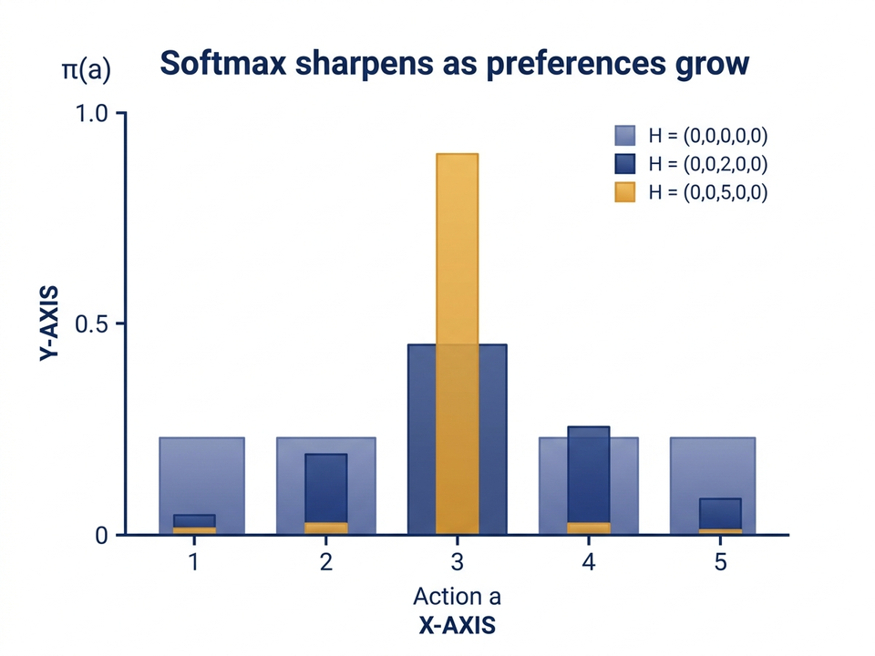
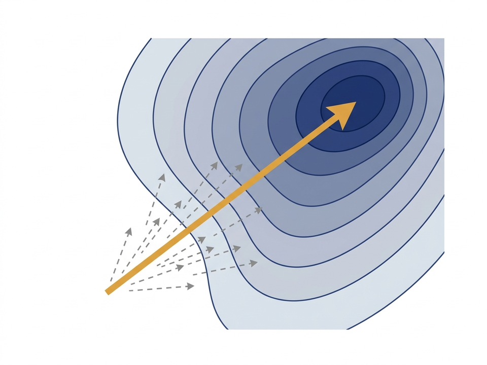
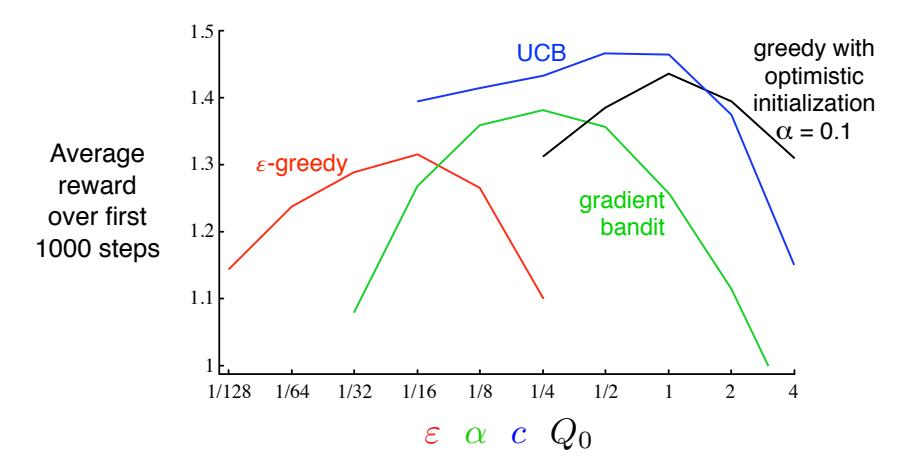
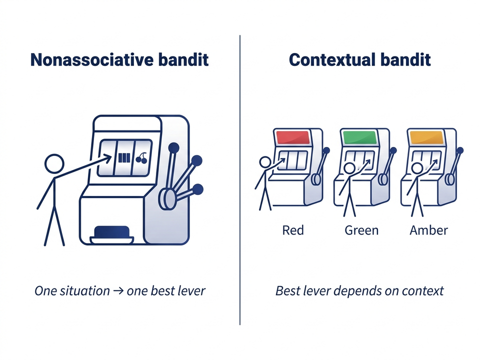
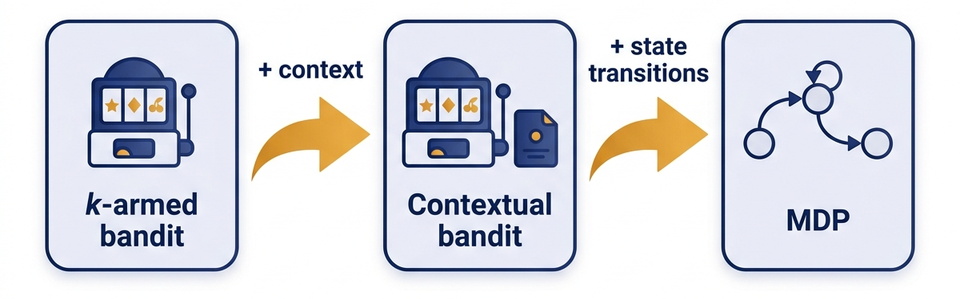

Initially \(H_1(a) = 0\) for all \(a\) — uniform policy.
Larger preference \(\Rightarrow\) higher selection probability, but never zero.
Built-in exploration: every action keeps non-zero probability.

Question #1 — Softmax = Sigmoid for k = 2
Show that for two actions, the softmax distribution reduces to the logistic / sigmoid function.
Hint: divide numerator and denominator by \(e^{H_t(1)}\) and let \(x = H_t(2) - H_t(1)\).
Gradient Bandit in One Sentence
Gradient bandit: maintain a real-valued preference \(H_t(a)\) for each action, sample actions from a softmax over these preferences, and update the preferences after each step using a stochastic-gradient rule that pushes preference up when reward beats a baseline and down when it falls short.
No \(Q\)-estimate is ever computed.
Update is differentiable in \(H\) — that's what makes it "gradient".
Conclusion: Eq. 2.12 is stochastic gradient ascent on \(\mathbb{E}[R_t]\).
Step 6: What the Derivation Bought Us
Expected update equals the true gradient \(\Rightarrow\) SGA convergence applies.
Baseline \(B_t\) is a free choice — affects variance, not expectation.
\(B_t = \bar R_t\) is simple and works well; it is not provably optimal.
Same recipe powers REINFORCE and policy gradient methods.

Why the Baseline Doesn't Bias the Update
Question: In the derivation we added \(-B_t\,\dfrac{\partial \pi_t(x)}{\partial H_t(a)}\) to each term in the gradient sum. Why is the expected update unchanged for any choice of \(B_t\) (constant, zero, or \(\bar R_t\))?
The 10-Armed Testbed Shifted by +4
S&B re-run the testbed with all true means shifted up by +4: \(q_*(a) \sim \mathcal{N}(+4, 1)\).
Raw rewards are now uniformly positive — a stress test for the baseline.
Without a baseline, every \((R_t - 0)\) is positive — preferences will drift.
Sutton & Barto, RL: An Introduction, Ch. 2, Fig. 2.5 — gradient bandit with and without a reward baseline on the +4-shifted 10-armed testbed.
Choosing \(\alpha\): A Parameter Study
Like \(\epsilon\)-greedy and UCB, the gradient bandit has a sweet-spot \(\alpha\).
Too small \(\Rightarrow\) learns too slowly. Too large \(\Rightarrow\) noisy, unstable preferences.
S&B's parameter study shows the characteristic inverted-U curve.

Sutton & Barto, RL: An Introduction, Ch. 2, Fig. 2.6.
Question #4 — What If \(B_t = 1000\)?
Scenario: You replace the baseline \(\bar R_t\) with the constant \(B_t = 1000\) — much larger than any actual reward.
(a) Will the algorithm still converge to the optimal policy in expectation?
(b) What practical problem will you observe in your training curves?
From Nonassociative to Associative
All bandit settings so far: a single situation, find the best arm.
Real problems: the best action depends on context (time of day, user, sensor reading, screen colour).
We need a policy — a mapping from contexts to actions, not just one action.

The Coloured-Slot-Machine Story (S&B §2.9)
Several different \(k\)-armed bandit tasks; one shown each step at random.
The machine displays a colour indicating which task it is.
Goal: learn a policy — "if red, pull arm 1; if green, pull arm 2; …"
Reward depends on the (context, action) pair.
Sutton & Barto, RL: An Introduction, Ch. 2.9.
Contextual Bandit / Associative Search
Contextual bandit (associative search): at each step the agent observes a context \(C_t\), selects an action \(A_t\), and receives a reward \(R_t\) drawn from a distribution depending on \(C_t\) and \(A_t\). Goal: learn a policy \(\pi : \text{contexts} \to \text{actions}\) that maximises expected reward.
Like a bandit: action affects only the immediate reward.
Like full RL: requires learning a policy, not a single action.
Bridge problem between Lecture 1's bandits and the next lecture's MDPs.
Where Contextual Bandits Sit in the RL Landscape
k-armed bandit
Contextual bandit
Full RL (MDP)
Situations
One
Many
Many
Goal
Best action
Best action per context
Best action sequence
State transitions
None
None
Yes — action affects next state
Reward
Immediate
Immediate
Delayed, cumulative

Sutton & Barto, Ch. 2.9 (bridge to Ch. 3).
Application Lens: Personalised Recommendations
Arms = candidate articles / ads / products.
Context = user features (location, time, history).
Baseline reduces variance, never biases the expected update.
Contextual bandit: policy maps context → action; bridge to full RL.
All bandit settings share one feature: actions affect only the immediate reward.
Next: Markov Decision Processes — when actions also affect the next state.
Question #6 — Exit Check
Scenario: You are designing an algorithm for a news app that picks 1 of 5 headlines per visitor. You have rich user features (location, recent reads).
(a) Is this a bandit, contextual bandit, or full RL problem? Why?
(b) Would you reach for a gradient bandit here, or does the contextual nature change your choice? What would you change in the algorithm to make it context-aware?